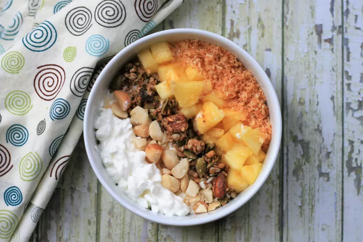

Cottage Cheese Bowl

For those days you don't feel like yogurt, this cottage cheese bowl is sure to hit the spot!
It's both healthy and delicious! Play around with different fruits and toppings.
I like to use a paleo granola that is grain free.
Ingredients
- 1/2 cup low-fat cottage cheese
- 1/4 cup chopped fresh pineapple
- 1 tablespoon unsweetened toasted coconut
- 1 tablespoon coarsely chopped macadamia nuts
- 1 tablespoon granola
Steps
-
Place cottage cheese into a small bowl. Arrange pineapple, coconut, macadamia nuts,
and granola side-by-side on top. Serve immediately.